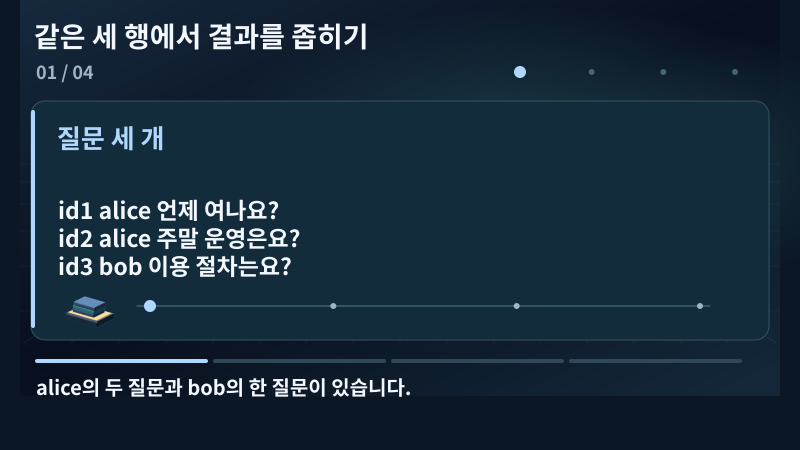
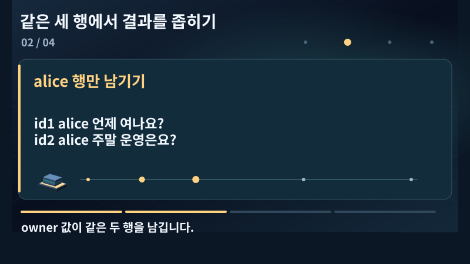
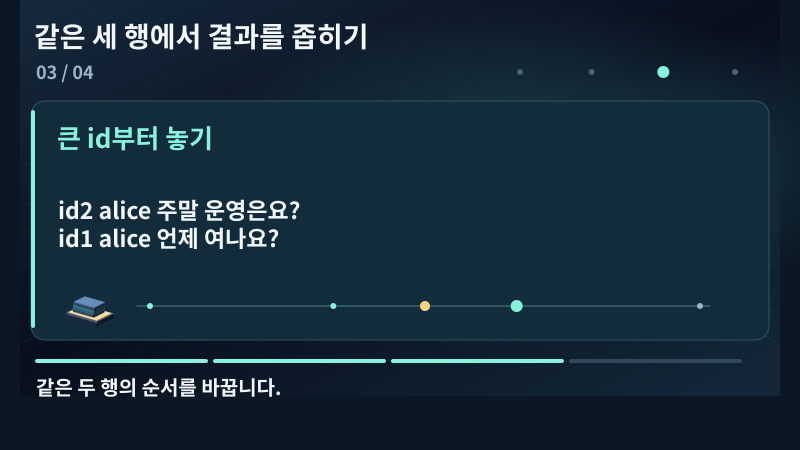
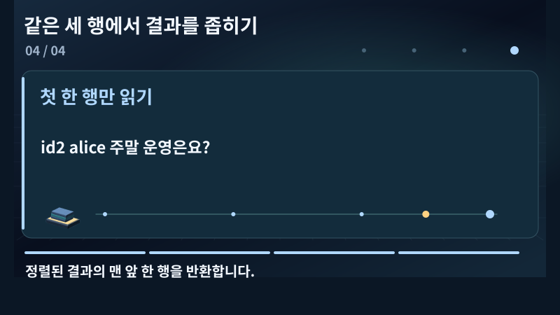

사용자·문서·대화를 SQL로 조회하기
도서관 질문을 남긴 사람이 누구인지 보려는데 질문 표에는 alice라는 ID만 있습니다. 사용자 표에서 같은 ID를 찾아 이름을 붙이는 작업부터 시작합니다. 수업용 가상 데이터만 사용합니다.
수업 노트북
실행을 확인한 커널은 Python 3.12.15입니다.
한 사용자의 마지막 질문 찾기
‘대화 기록’ 안에서 ‘사용자 조건’를 거쳐 어느 값이 오른쪽에 남는지 보세요.
사용자 조건을 먼저 적용해 해당 사람의 질문을 읽습니다.
관계형 데이터베이스는 같은 종류의 기록을 표에 저장합니다. course_users에는 사용자 한 명당 한 행, course_turns에는 질문 한 건당 한 행이 있습니다. 작은 예제는 같은 이름의 두 표를 SQLite 메모리에 만들고 SQL의 결과부터 관찰합니다. 강사가 준비한 PostgreSQL의 실제 테이블을 읽는 셀은 마지막에 있습니다.
셀 01 · 제공 셀 · 두 사용자의 질문 만들기
수업용 원자료에서 가져온 질문 세 건을 넣고 alice의 질문만 읽습니다. 이 셀을 다시 실행하면 새 메모리 DB로 시작합니다.
import sqlite3
db = sqlite3.connect(":memory:")
db.executescript("""
CREATE TABLE course_users (id TEXT PRIMARY KEY, display_name TEXT NOT NULL);
CREATE TABLE course_turns (id INTEGER PRIMARY KEY, owner TEXT NOT NULL, question TEXT NOT NULL, answer TEXT NOT NULL);
INSERT INTO course_users VALUES ('alice', '학습자 A'), ('bob', '학습자 B');
INSERT INTO course_turns VALUES
(1, 'alice', '언제 여나요?', '평일 오전 9시입니다.'),
(2, 'alice', '주말 운영은요?', '제공한 안내에 주말 운영 정보가 없습니다.'),
(3, 'bob', '이용 절차는요?', '먼저 예약합니다.');
""")
print(db.execute("SELECT question FROM course_turns WHERE owner = 'alice' ORDER BY id").fetchall())실행 결과
[('언제 여나요?',), ('주말 운영은요?',)]첫 두 행만 보입니다. WHERE가 bob의 행을 빼고 ORDER BY가 질문 ID의 오름차순으로 돌려줬습니다. SELECT 뒤의 question은 반환할 열입니다.
과제 02 · 마지막 질문 한 건 꺼내기
alice의 질문을 최근 ID부터 정렬하고 첫 행만 가져오세요. 질문 문장을 출력합니다.
fetchone()은 결과 한 행을 가져옵니다. 한 열만 골라도 행은 ('주말 운영은요?',)처럼 묶여 있습니다. 뒤에 붙인 [0]이 그 행의 첫 열에서 질문 문자열을 꺼냅니다.
# SELECT 결과를 id 내림차순으로 정렬하고 LIMIT를 넣으세요.풀이와 실행 결과 보기
sql = "SELECT question FROM course_turns WHERE owner = 'alice' ORDER BY id DESC LIMIT 1"
print(db.execute(sql).fetchone()[0])실행 결과
주말 운영은요?
“주말 운영은요?”가 나옵니다. 한 건만 고르는 LIMIT 1 앞에 정렬 방향을 정해야 원하는 질문을 재현할 수 있습니다.
표를 이어 이름을 붙이고 질문 수 세기
‘사용자 표’와 ‘대화 표’가 오른쪽의 ‘사용자별 건수’에 함께 들어가는 위치를 보세요.
사용자 키로 두 표를 연결한 뒤 질문 수를 셉니다.
질문 표의 owner와 사용자 표의 id가 같은 행끼리 연결합니다. 두 사용자의 모든 행을 그대로 짝지으면 alice의 질문에 bob 이름이 붙을 수도 있습니다. JOIN의 ON 조건을 먼저 확인하세요.
셀 03 · 이름을 기준으로 질문 수 묶기
JOIN으로 이름을 붙인 뒤 사용자별 행 수를 집계합니다.
sql = """SELECT u.display_name, COUNT(*) AS turn_count
FROM course_users AS u
JOIN course_turns AS t ON t.owner = u.id
GROUP BY u.id, u.display_name
ORDER BY u.id"""
print(db.execute(sql).fetchall())실행 결과
[('학습자 A', 2), ('학습자 B', 1)]학습자 A는 두 건, 학습자 B는 한 건입니다. 이 INNER JOIN은 질문이 하나도 없는 사용자는 세지 않습니다. 그 사용자까지 표시하려면 LEFT JOIN과 COUNT할 열을 함께 검토하세요.
수업용 PostgreSQL에서 같은 조회 실행하기
‘같은 질의’에서 출발해 ‘PostgreSQL’를 거친 뒤 ‘조회 행’가 되는 순서를 따라가세요.
같은 질의를 다른 데이터베이스에서도 실행해 대조합니다.
강사가 PostgreSQL의 53장 B1 테이블을 준비하고 psycopg가 있는 커널에 수업용 접속 정보(PGHOST·PGPORT·PGDATABASE·PGUSER·PGPASSWORD)와 HK_COURSE_USE_POSTGRES=1을 설정하면 아래 셀이 같은 SQL을 읽기 전용 트랜잭션에서 실행합니다. 접속 정보는 노트북에 입력할 필요가 없습니다.
셀 04 · 실제 서버에서 집계 읽기
교실의 PostgreSQL 테이블을 연결했다면 방금 작성한 집계 쿼리를 그대로 보냅니다. 준비되지 않은 커널에서는 안내만 표시합니다.
from importlib.util import find_spec
import os
pg_ready = find_spec("psycopg") is not None and os.getenv("HK_COURSE_USE_POSTGRES") == "1"
if pg_ready:
import psycopg
with psycopg.connect(connect_timeout=3) as connection:
connection.execute("SET TRANSACTION READ ONLY")
print(connection.execute(sql).fetchall())
else:
print("PostgreSQL 연결은 준비된 수업 커널에서 확인하세요.")실행 결과
PostgreSQL 연결은 준비된 수업 커널에서 확인하세요.
실제 DB에 초기 자료만 있다면 같은 두 행을 볼 수 있습니다. 후속 실습으로 행이 늘어난 DB에서는 집계도 바뀝니다. 안내만 출력됐다면 SQLite에서의 SQL 실행과 PostgreSQL의 실제 접속을 구분해 기록하세요. 서버 실습 전에는 수업용 PostgreSQL에 예제 표와 행이 있는지, 커널에 psycopg와 연결 설정이 있는지 확인하세요. 준비한 환경에서 HK_COURSE_USE_POSTGRES=1을 설정한 뒤 출력된 이름별 개수를 SQLite 결과와 대조하세요.
다시 풀어 보기
필요한 행은 WHERE, 반환할 열은 SELECT, 표 간 연결 조건은 JOIN의 ON에 놓입니다. 동료에게 읽힐 결과에는 ID와 표시 이름 중 무엇이 필요한지 먼저 정해 보세요.
관련 개념 더 읽기
프로젝트 기록에서 조회할 질문을 고르기
문서가 늘고 질문 기록이 쌓이면 ‘alice가 어떤 문서에 질문했는가?’처럼 여러 기록을 함께 보는 일이 생깁니다. 오늘은 Python 목록에 있던 데이터를 표의 행으로 생각하고, 필요한 행을 SQL로 골라 냅니다. SQL은 관계형 데이터베이스에 데이터 작업을 요청하는 언어입니다. PostgreSQL은 그 요청을 처리하는 데이터베이스 프로그램입니다.
이전 팀 프로젝트에서 문서 하나와 질문 두 개를 골라 보세요. 실행 기록이 없다면 이 장의 가상 도서관·실습실 자료를 사용합니다. 앞선 52일 교재나 자기 코드의 실행 성공을 이번 실습의 조건으로 삼지 않습니다. 가상 자료를 실제 서비스 이용 기록으로 보고하지도 않습니다.
행·열·키로 같은 기록을 연결하기
테이블은 같은 종류의 기록을 모은 표입니다. 행은 기록 한 건, 열은 그 기록의 속성입니다. course_users의 행 하나는 사용자 한 명이며 id와 display_name이 열입니다. 표시 이름은 바뀔 수 있으므로 다른 표가 사용자를 가리킬 때는 id를 사용합니다.
기본키(PK)는 행을 구별하는 값입니다. 같은 테이블에 중복되거나 NULL인 기본키를 둘 수 없습니다. 외래키(FK)는 다른 테이블의 키를 참조해 존재하는 기록끼리 연결하게 하는 규칙입니다. course_documents.owner의 alice는 course_users.id의 alice를 가리킵니다. owner가 사람 이름을 자동으로 인증하는 기능은 아닙니다.
| 테이블 | 한 행의 의미 | 주요 연결 |
|---|---|---|
| course_users | 사용자 한 명 | id=alice 또는 bob |
| course_documents | 문서 한 개 | owner → users.id |
| course_conversations | 대화 한 개 | owner → users.id |
| course_turns | 질문과 답변 한 쌍 | conversation_id → 대화, document_id → 문서 |
문서·대화 ID는 UUID라는 긴 식별자 형식을 씁니다. 값을 외울 필요 없이 같은 ID가 어디에 나타나는지 확인하세요. 질문 행의 id는 DB가 만든 번호입니다. 이 번호와 사용자 id는 이름이 같아도 역할이 다릅니다. 한 대화 안에 질문 행이 여러 개 있으므로 질문 수와 대화 수 역시 다릅니다.
제공 스키마는 문서 ID와 owner를 함께 확인합니다. alice의 대화에 bob의 문서가 잘못 연결되는 일을 줄이기 위해서입니다. 복합 제약을 지금 직접 설계할 필요는 없습니다. 오늘은 같은 소유자의 기록끼리 이어지는 것을 먼저 읽습니다.
| 사용자 | 문서 제목 | 대화 제목 | 질문 수 |
|---|---|---|---|
| alice / 학습자 A | 도서관 이용 안내 | 도서관 질문 | 2 |
| bob / 학습자 B | 실습실 안내 | 실습실 질문 | 1 |
제공된 DB를 켜고 접속하기
Docker 설정 파일은 준비된 DB를 실행하기 위해 제공합니다. 오늘은 켜기·상태 확인·접속·멈추기를 사용합니다. 이미지와 볼륨의 원리는 71~72일에 배웁니다. 파일 이름과 명령을 직접 바꾸는 작업은 필요하지 않습니다.
ps 결과에서 db가 healthy가 되면 다음 초기화 명령을 실행합니다. 제공 스크립트는 네 테이블과 가상 데이터를 한 번 준비합니다. 다시 실행해도 같은 초기 데이터를 중복 추가하지 않도록 만든 도구입니다. 내부 psql 제어문은 학생 필수 문법이 아닙니다.
첫 결과는 course가 예상됩니다. 두 번째는 실제 설치 버전 문자열이므로 그대로 관찰표에 적습니다. 이 교재는 PostgreSQL 16 계열을 사용하도록 설계했지만 실제 이미지 실행 버전은 실행한 결과로 확인합니다. psql 창을 나갈 때는 역슬래시와 q를 붙인 \q를 입력합니다.
SELECT로 필요한 열을 고르기
SELECT 다음에는 보고 싶은 열을, FROM 다음에는 읽을 테이블을 적습니다. 문장의 끝에는 세미콜론을 붙입니다. 줄을 나눠도 한 문장이며 psql은 세미콜론이 나올 때 실행합니다. SQL 키워드를 대문자로 쓰는 것은 읽기 위한 습관이고, 이 예제의 테이블·열 이름은 소문자입니다.
문자열 값은 작은따옴표로 감쌉니다. SELECT id, display_name의 두 이름은 열을 가리키므로 문자열 따옴표를 붙이지 않습니다. 열 이름을 'id'라고 쓰면 id 열의 값을 읽는 대신 같은 글자 id를 출력하게 됩니다.
| id | display_name |
|---|---|
| alice | 학습자 A |
| bob | 학습자 B |
queries.sql 전체 실행은 이 장 후반의 GROUP BY와 JOIN까지 읽은 뒤 진행합니다. 지금은 위의 SELECT 두 문장만 SQL 창에 입력하세요.
WHERE로 alice의 질문만 고르기
WHERE는 각 행에 조건을 적용해 남길 행을 정합니다. 다음 문장은 course_turns에서 owner가 alice인 행만 고릅니다. 등호 하나는 SQL에서 비교를 뜻합니다. Python의 비교 연산자 ==를 그대로 옮기지 않습니다.
SELECT에 question과 answer만 적었어도 WHERE에서 owner를 사용할 수 있습니다. 결과에 보여 주는 열과 행을 고르는 조건은 서로 다른 역할입니다. 누가 질문했는지 조건을 빠뜨리면 다른 사용자의 행도 함께 보게 됩니다.
| question | answer |
|---|---|
| 언제 여나요? | 평일 오전 9시입니다. |
| 주말 운영은요? | 제공한 안내에 주말 운영 정보가 없습니다. |
AND는 두 조건이 모두 맞는 행을 남깁니다. 조건을 바꿔 owner='nobody'로 실행하면 정상 결과가 0행입니다. 이 결과는 DB에 접속하지 못한 오류와 다릅니다. 0행이 나오면 조건과 데이터가 맞는지 먼저 확인합니다.
정렬한 뒤 필요한 행 수만 남기기
테이블은 출력 순서를 보장하는 목록이 아닙니다. 특정 순서가 필요하면 ORDER BY를 적습니다. ASC는 작은 값부터, DESC는 큰 값부터이며 ASC를 생략할 수 있습니다. 이 작은 샘플에서 질문 id가 큰 행을 마지막에 저장한 질문으로 다룹니다.
LIMIT 1은 결과를 최대 한 행으로 줄입니다. 정렬 없이 LIMIT만 쓰면 어떤 한 행인지 의도대로 정할 수 없습니다. ‘가장 최근’이라는 요구를 실제 서비스에 적용할 때는 시간 열과 동점 처리도 설계해야 합니다. 오늘 예제에서는 고정된 id 기준을 사용합니다.
같은 세 행에서 결과를 좁히기
같은 표에 WHERE, ORDER BY, LIMIT를 차례로 적용한 결과입니다. 각 칸에서 사라진 행과 자리가 바뀐 행을 구별하세요.
조건을 적용할 때마다 남은 행과 읽는 열을 비교하세요.
사용자 조건과 정렬 기준을 적용해야 여러 대화 중 원하는 사용자의 기록을 읽을 수 있습니다.
- 01원본
- 02조건
- 03정렬
- 04제한

STEP 01 · course_turns질문 세 개
alice의 두 질문과 bob의 한 질문이 있습니다.
id1 alice 언제 여나요? id2 alice 주말 운영은요? id3 bob 이용 절차는요?

STEP 02 · WHEREalice 행만 남기기
owner 값이 같은 두 행을 남깁니다.
id1 alice 언제 여나요? id2 alice 주말 운영은요?

STEP 03 · ORDER BY큰 id부터 놓기
같은 두 행의 순서를 바꿉니다.
id2 alice 주말 운영은요? id1 alice 언제 여나요?

STEP 04 · LIMIT첫 한 행만 읽기
정렬된 결과의 맨 앞 한 행을 반환합니다.
id2 alice 주말 운영은요?
GROUP BY로 사용자별 질문 횟수 세기
행 하나씩 읽던 결과를 사용자별 합계로 바꾸겠습니다. COUNT(*)는 입력 행의 개수를 셉니다. GROUP BY owner는 owner가 같은 행을 한 묶음으로 만들고, 각 묶음에서 COUNT를 계산하게 합니다. AS turn_count는 출력 열에 붙이는 별칭입니다.
여기서 세는 대상은 course_turns의 질문/답변 행입니다. alice가 대화 하나에서 질문 두 개를 했으므로 횟수는 2입니다. 대화 개수를 세고 싶다면 읽을 테이블과 셀 단위를 다시 정해야 합니다.
| owner | 묶음에 들어간 질문 | turn_count |
|---|---|---|
| alice | 언제 여나요? / 주말 운영은요? | 2 |
| bob | 이용 절차는요? | 1 |
그룹 결과에 question을 함께 표시하면 alice 묶음의 어느 질문을 써야 할지 정해져 있지 않습니다. 오늘은 그룹 기준 owner와 집계 결과 count(*)만 선택합니다. GROUP BY 없이 전체를 세면 세 행을 한 번에 세어 3이 됩니다.
JOIN으로 사용자 이름을 질문에 붙이기
질문 행에는 owner 값이 있지만 표시 이름은 사용자 테이블에 있습니다. JOIN은 두 테이블에서 조건에 맞는 행을 짝지어 한 결과로 보여 줍니다. ON t.owner = u.id는 질문의 owner와 사용자의 id가 같은 쌍을 고릅니다.
AS u와 AS t는 테이블 별칭입니다. u.display_name은 사용자 표의 열, t.question은 질문 표의 열이라는 뜻입니다. 두 테이블에 id처럼 같은 이름이 있어도 별칭을 붙이면 어느 값을 뜻하는지 분명해집니다.
| display_name | question |
|---|---|
| 학습자 A | 언제 여나요? |
| 학습자 A | 주말 운영은요? |
| 학습자 B | 이용 절차는요? |
사용자 행이 두 개라고 JOIN 결과도 두 행인 것은 아닙니다. alice 한 행이 질문 두 행과 각각 연결되어 두 번 나타납니다. JOIN은 화면에서 같은 이름을 자동으로 하나로 합치지 않습니다. 조건 없이 모든 쌍을 만들면 이 샘플은 사용자 2행 × 질문 3행으로 여섯 쌍이 생깁니다.
대화와 문서 제목이 있는 이력 읽기
질문만 보면 어떤 대화와 문서에서 나온 질문인지 알기 어렵습니다. 이번에는 질문 행에서 conversation_id와 document_id를 따라가 제목을 붙입니다. 제공 데이터에서는 두 질문이 같은 도서관 대화·문서에 연결됩니다.
JOIN은 연결되는 행이 있는 경우를 남깁니다. LEFT JOIN은 왼쪽 질문 행을 남겨 두고, 오른쪽 문서가 연결되지 않으면 문서 열을 NULL로 둡니다. 이 서비스는 문서 없이 나눈 대화도 기록할 수 있으므로 문서 부분을 LEFT JOIN으로 작성합니다. NULL은 데이터가 없는 상태이며 글자 'NULL'이나 숫자 0과 같지 않습니다.
| conversation | document | question |
|---|---|---|
| 도서관 질문 | 도서관 이용 안내 | 언제 여나요? |
| 도서관 질문 | 도서관 이용 안내 | 주말 운영은요? |
ON 안의 owner 비교는 같은 소유자의 대화·문서를 연결한다는 의도를 보여 줍니다. 이 조회문만으로 서비스 로그인이나 모든 권한 검사가 완성되는 것은 아닙니다. 지금은 가상 사용자를 조건으로 삼아 관계를 읽는 활동입니다.
결과가 다를 때 확인할 순서
| 관찰 | 확인할 것 | 학습 기록 |
|---|---|---|
| psql 입력이 계속 다음 줄로 넘어감 | 문장 끝 세미콜론과 따옴표가 닫혔는지 | 문장 완성 후 실행 여부 |
| column does not exist | 열 이름·별칭·작은따옴표 사용 | 틀린 이름과 수정한 이름 |
| 0 rows | 조건 값과 실제 행의 값 | 정상 빈 결과인지 |
| 예상보다 많은 행 | JOIN 조건과 이미 추가한 데이터 | 원본 행과 결과 행의 대응 |
| Docker/DB 연결 오류 | 엔진 상태·포트·접속 설정 | SQL 실행 전 환경 문제인지 |
오류 메시지는 원인을 찾는 단서입니다. SQL 문법 오류가 나기 전에 연결 자체가 실패했다면 WHERE를 바꾸어도 해결되지 않습니다. 반대로 0행은 문장이 실행됐을 가능성이 있으므로 연결 오류와 분리해 봅니다. 기존 자료를 지우는 방법부터 시도하지 않습니다.
54일에 넘길 파일과 접속 기록
query-results.sql과 observation.md를 저장합니다. 실행 폴더와 PGHOST·PGPORT·PGDATABASE·PGUSER는 재현 기록에 남길 수 있지만 비밀번호는 제외합니다. SQL 창은 \q로 닫고 DB는 필요한 경우 docker compose stop db로 멈춥니다. 같은 DB의 데이터를 다음 날 이어 씁니다.
54일에는 오늘 읽은 표에 행을 추가·수정·삭제하고, 여러 변경을 함께 확정하거나 되돌리는 방법을 배웁니다. 그다음 Python 함수에서 값을 SQL과 분리해 전달합니다. 오늘 조회가 막힌 경우에도 같은 가상 자료와 제공 초기화 파일에서 다시 시작할 수 있습니다.
공식 자료와 다음 학습
이 원고는 실제 PostgreSQL 실행 검증을 기다리는 검토용 교재입니다. 본문의 SQL 출력은 제공 데이터로 계산한 예상 결과이며 제작 환경에서 관찰한 DB 실행 결과가 아닙니다. 검증 범위는 VALIDATION.md에서 확인합니다.